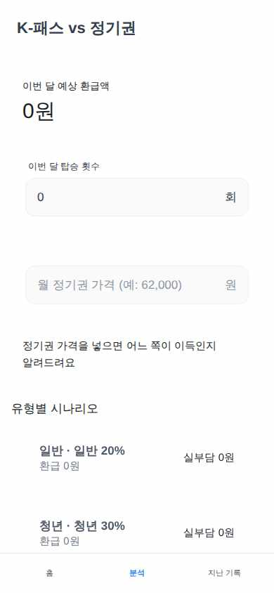
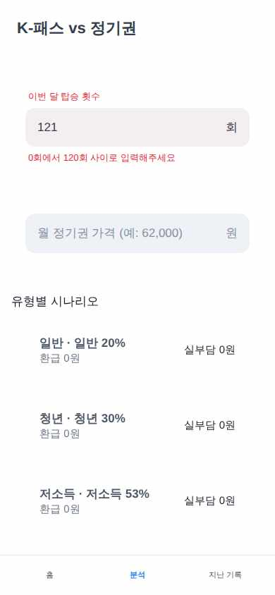

KPassTracker
가상 사용자 3명 중 2명 완주 · 2026-09-21 18:03
완주29세 IT 스타트업 마케터. 토스를 매일 쓰지만 K-패스 제도를 잘 모르고 긴 설명은 읽지 않는다. 참을성이 낮아 3탭 안에 '그래서 정기권이 이득이야, K-패스가 이득이야?'라는 답을 원하고, 기본값을 대부분 그대로 둔 채 빠르게 넘긴다.
과업 첫 실행 설정(S1)에서 이용자 유형은 '일반', 평균 요금은 1,500원으로 입력한다. 그 뒤 /insight에서 탑승 횟수 40회와 정기권 가격 55,000원을 넣고 무료 층의 예상 환급액과 정기권 비교 판정을 확인한다.

1 "예: 1500"에 "1500" 입력 → 성공

4 "이번 달 탑승 횟수"에 "40" 입력 → 성공(드라이버 보정: nearby-fallback — 앱 결함 아님)

7 최종 화면 — 판정: 완주
심사: 화면에 예상 환급액 '12,000원'이 크게 표시되어 있다. 입력한 탑승 횟수 40회와 정기권 가격 55000이 반영되어 있다. 판정 배지는 'K-패스 이득'이고, 문구는 'K-패스가 월 7,000원 이득이에요'다. 유형별 시나리오의 '일반 · 일반
6스텝 · 드라이버 보정 입력 1회(라벨 폴백·날짜 정규화 — 앱 결함 아님)
측정 한계67세 은퇴 공무원이며 저소득 유형(lowIncome)에 해당한다. 복지관에 다니느라 버스를 하루 두 번 탄다. 글씨를 천천히 끝까지 읽고, 잘못 눌렀을까 봐 뒤로가기를 자주 누른다. 앱을 닫았다 열어도 기록이 남아 있는지 꼭 다시 확인한다.
과업 오늘(2026-09-22) 탑승 횟수를 2회로 기록한다. 뒤로가기로 홈(S2)과 기록 화면(S3)을 오가며 값을 확인한 뒤, 앱을 완전히 닫았다가 다시 열어 기록이 그대로인지 확인한다.

6 "이번 달 기록" 탭 → 성공

10 최종 화면 — 판정: 측정 한계(드라이버가 못 다룬 컨트롤)
심사: 이 화면(홈)에서는 오늘 횟수 '오늘 2회'와 이번 달 '2/21회'만 확인됩니다. 이것만으로는 기준을 충족했다고 볼 수 없습니다. 기준은 앱을 다시 실행한 뒤에도 localStorage 'kpass:rides'의 days['2026-09-22']가
9스텝 · 드라이버가 못 다룬 컨트롤 1회(측정 한계)
완주34세 백엔드 개발자이며 청년(youth) 유형이다. 항상 다크모드를 쓰고, 계산 앱은 일단 의심한다. 입력칸에 빈 값·0·음수·-5·상한 초과(121) 같은 값을 일부러 넣어 앱이 깨지는지 본 다음, 상한값에서 계산이 맞는지 직접 검산한다.
과업 설정에서 유형은 '청년', 평균 요금은 1,450원으로 저장한다. /insight 탑승 횟수 칸에 빈 값·-5·121을 넣어 입력이 막히는지 확인하고, 정기권 가격에는 0과 빈 값을 넣어 비교 판정이 나오지 않는지 확인한다. 그다음 상한값인 탑승 120회와 정기권 99,000원으로 비교 결과를 검산한다.

1 "청년" 탭 → 성공

10 "이번 달 탑승 횟수"에 "120" 입력 → 성공(드라이버 보정: nearby-fallback — 앱 결함 아님)
심사: 화면에 환급 26,100원, 정기권 이득 문구 '정기권이 월 48,900원 이득이에요', 청년 30% 실부담 147,900원이 모두 표시된다. 입력값도 탑승 120회, 정기권 99000원으로 기대 조건과 같다. 잘못된 입력 단계(빈 값, -5, 121
- 🟡 [confusing_copy · 스텝 6] 탑승 횟수 입력칸에 라벨이 없고 placeholder '예: 32'와 단위 '회'만 보인다. 정기권 칸은 '월 정기권 가격 (예: 62,000)'처럼 설명이 있어서 더 대비된다.
- 🟡 [confusing_copy · 스텝 7] 탑승 횟수에 -5를 입력하면 안내 없이 '5'로 바뀌고 실부담 7,250원이 그대로 계산된다. 잘못된 값이라는 안내가 없어 입력이 막혔는지 보정됐는지 알 수 없다.
- 🟡 [confusing_copy · 스텝 12] 탑승 120회인데 환급액이 26,100원(60회분 기준)으로 나오고, 환급이 월 60회까지만 적용된다는 안내가 화면에 없다. 또 '일반 · 일반 20%'처럼 라벨이 중복된다.
12스텝 · 드라이버 보정 입력 3회(라벨 폴백·날짜 정규화 — 앱 결함 아님)
각 화면은 가상 사용자가 그 다음 동작을 정하기 직전에 본 것이다. 캡션은 그 화면에서 실제로 한 동작이다. 마지막 장이 성공/실패 판정의 근거다. 화면을 누르면 원본 크기로 열린다.
브라우저에서 돌린 결과라 토스 SDK(로그인·결제·햅틱)는 비활성이다 — UI와 흐름만 판단 대상이다.
{kind=link}
{kind=link}
{kind=link}
{kind=link}
{kind=link}
{kind=link}
{kind=link}
{kind=link}
{kind=link}
{kind=link}
{kind=link}
{kind=link}
{kind=link}
{kind=link}
{kind=link}
{kind=link}
{kind=link}
{kind=link}